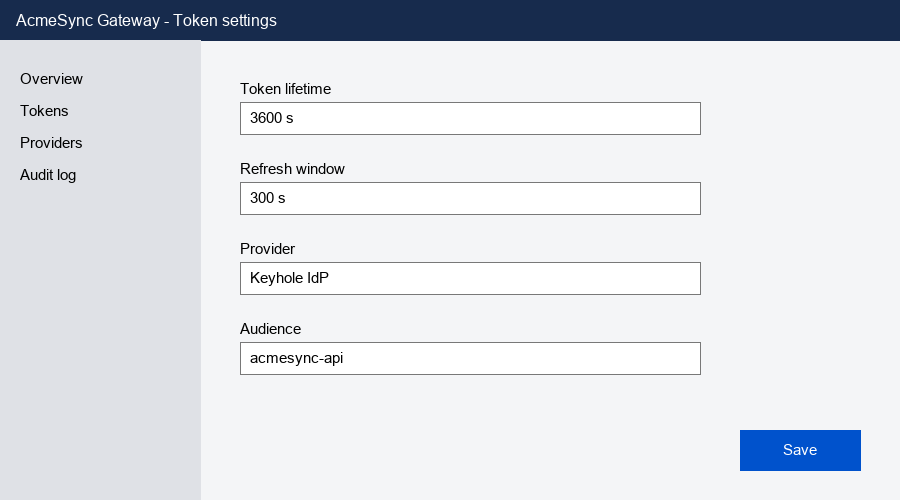
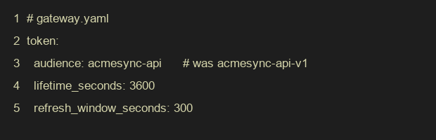
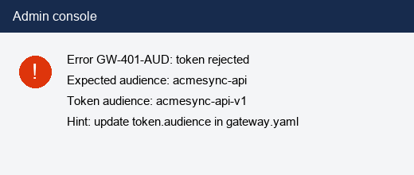
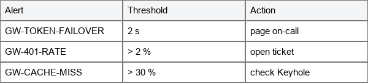

The CLI talks to the gateway's admin API and needs Python 3.11 or later.
pip install acmesync-gateway-cli==2.15.0 acmesync --version
The CLI reads the admin token from the environment, never from a file in the repository.
export ACMESYNC_TOKEN=<your admin token> acmesync login --region frankfurt
Never paste the admin token into a ticket or a chat.

A tenant's name must be unique and at most 32 characters long.
acmesync tenant create --name partner-b --region dublin --rate-limit 50
Sandbox keys expire after 14 days; live keys never expire but can be revoked.
acmesync key issue --tenant partner-b --kind sandbox

Every call has a trace id in the X-Trace-Id response header.
acmesync trace show 7f3a9c1e --tenant partner-b

The budget is set per tenant and takes effect within one minute.
acmesync tenant update partner-b --retry-budget 60
The switch changes the partner's DNS entry; it is reversed with --rollback.
acmesync tenant go-live partner-b acmesync tenant go-live partner-b --rollback
A revoked key stops working within 30 seconds in both regions.
acmesync key revoke --tenant partner-b --key-id k_51
Usage is exported as CSV with one row per tenant and day.
acmesync usage export --from 2026-01-01 --to 2026-03-31 > usage-q1.csv
Error 401 means the token expired; sign in again.
Error 429 means the tenant's rate limit was reached.
